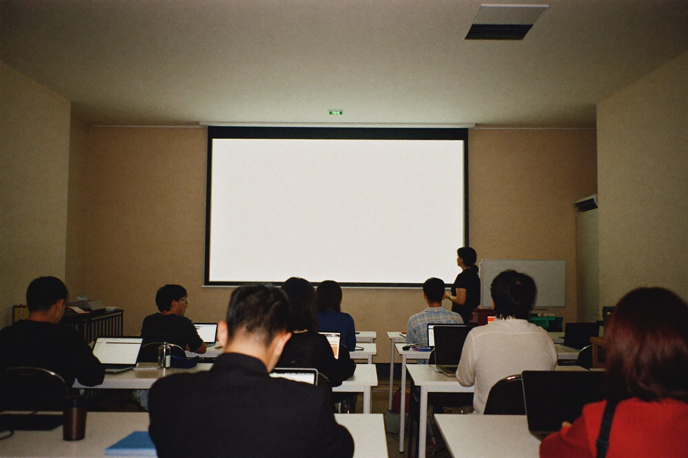
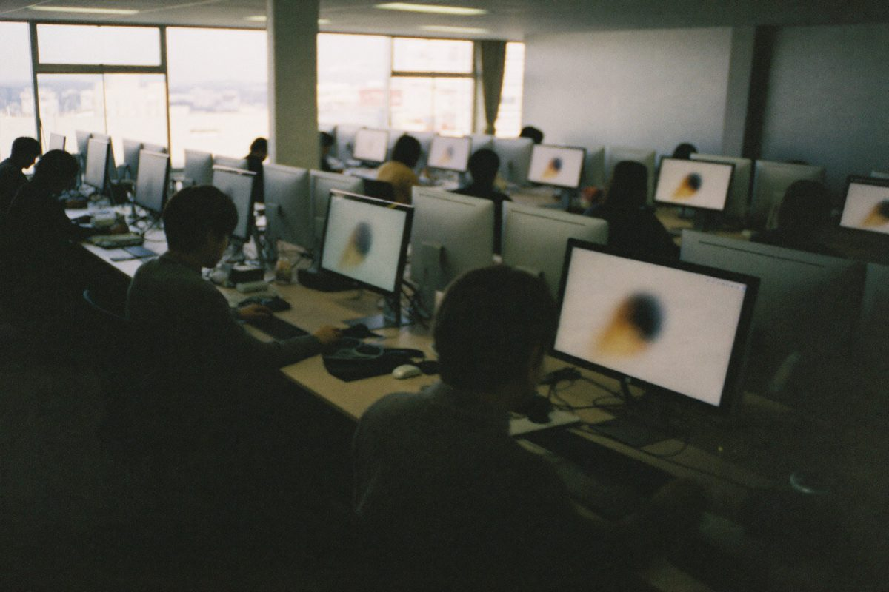

通信ネットワーク設備会社／従業員約86名
図面から見積へ。まず一業務をAI化
全社員向けの実践セミナーを実施。現在は積算・見積業務のAI化と、補助金を使った導入設計を並行してご支援しています。
ChatGPTは使っている。
でも、業務は変わっていない。
その先へ進むための、
中小企業専門のAI導入支援です。
中小企業の現場に入って、私たちが最初に必ず突き当たるのがこれです。
人手不足も、残業も、引き継ぎの不安も、たどれば同じ一点。業務の属人化です。
ベテランの頭の中にしかない手順が、共有されていない
同じ説明を、何度も繰り返している
担当者が休むと、その業務が止まってしまう
書類づくりに時間を取られ、本業が後回しになる
AIを試してはみたが、結局は定着しなかった
その属人化、
AIエージェントで
解ける可能性があります。
セミナーでお会いする方の多くは、すでにAIを使っています。
それでも業務が変わらないのは、AIが“調べもの相手”のままだからです。
たとえば、こんなふうに任せます。

この会社自体、AIエージェントだけで動いています。
提案書も、この画面も、日々の実務も。社員を増やさずに会社を回している当事者として、 「本当に現場で使えるのか」を、机上ではなくお話しします。
AIエージェントは、単なる便利ツールではありません。
現場の負担を減らし、品質まで底上げするための実用的な戦力です。
繰り返し作業をAIに委ね、属人化と人手不足を緩和。担当者がいないと止まる業務を減らします。
作業時間を短縮し、本来注力すべき業務へ時間を取り戻す。経営判断と顧客対応に集中できます。
抜け漏れ・ばらつきを抑え、判断スピードと精度を底上げ。属人スキルを組織の資産に変えます。
AIエージェントが定型業務を肩代わり。少人数経営でも回る体制をつくります。
デザイン・事務・問い合わせ対応など、外注していた業務を内製化。外注費と関連コストの削減につながります。
日々の細かい業務から解放され、意思決定・新規開拓・顧客対応に時間を集中できます。
ひとつの業務から導入し、効果を見ながら拡張。投資リスクを抑えながら、確実に積み上げます。
まず、御社の業務で試してみませんか。
資料を読むより、目の前で自社の書類ができあがるほうが早い。
いま、いちばん多くご依頼いただいているのが、この2時間です。

かんたんなアンケートに答えていただくだけ。当日いちばん効く業務を、こちらで見極めておきます。
参加された方が口にした言葉から、報告書・手順書・メールの下書きが目の前で仕上がっていきます。
その日つくったものと、同じことを社内で再現するための手順書をお持ち帰りいただけます。
※ 無理な勧誘はいたしません。セミナー後のご契約義務もありません。
2026年、中小企業から教育機関まで。いま実際にお手伝いしている現場です。
3社
実践セミナーの実施
85%
事前アンケート回答率
300名規模
受託したAI習得コース
全社員向けの実践セミナーを実施。現在は積算・見積業務のAI化と、補助金を使った導入設計を並行してご支援しています。

事前アンケートに85%が回答。当日その場で報告書・手順書などを作成し、再現手順書とともにお渡ししました。
実践セミナーののち、音声入力ツールの導入をご支援。現在はグループ内でのAI導入支援事業の立ち上げにも並走しています。
生徒向けAI習得コースの設計・運営を業務委託として受託。社員を増やさずに大規模な教育プログラムを回します。
※ お客様の守秘のため、社名は伏せて掲載しています。
「うちの業種でも使えるのか？」という疑問に、具体的な変化でお答えします。
4時間
現場記録を手元資料に転記しながら、担当者が手作業で積算・作成
30分
写真・記録をAIに渡すだけで下書きが完成。担当者は確認と仕上げに集中
1日10件で
約2〜3時間
案件ごとに文面を書き直し。繁忙期には翌日対応になることも
10件を約5分
案件情報を入力するとAIが下書きを一括生成。送信前に一文確認するだけ
1件あたり15分
過去メールを探しながら文面を組み立て。担当者によって返答内容にばらつきも
1件あたり2分
ナレッジベースからAIが適切な回答文を提案。品質が均一化され、新人でも即戦力
週2時間
複数スタッフの希望シフトを手作業で集約し、Excelに転記・調整
ほぼ自動化
スタッフの申請をAIが自動集計し、調整案を提示。管理者は最終確認のみ
※ 上記は類似業務における参考例です。実際の効果は業務環境・運用方法により異なります。
AI導入は、工夫次第で「思ったより始めやすい投資」になります。
AIツール導入費・社員研修費・さらに設計次第で専門家指導費まで、補助対象として申請できる可能性があります。補助金が使える進め方を、最初から一緒に設計します。
AIクラウドサービスやシステム導入費は、補助対象として最も確実です（デジタル化・AI導入補助金：補助率1/2、最大450万円）。
社員向けAI活用研修費は最大75%の助成を狙えます（東京都DXリスキリング助成金・人材開発支援助成金等）。
補助対象事業期間中のコンサルティング・専門家指導費は、「専門家経費」として補助対象化を狙える設計が可能です（補助金の種類・申請設計による）。
都道府県ごとのDX補助金も活用できます。たとえば福井県の「ふくいDX加速化補助金」（最大400万円・1/2補助）など、所在地に合わせて組み合わせます。
特定ベンダーに縛られない独立系の立場で、現場に合うAIを選び抜き、定着まで一気通貫でご支援します。
現場の悩みと業務フローを丁寧に伺います。
AIで効果が出やすい業務を特定し、優先度を整理します。
まずは一業務から。リスクを抑え、効果を素早く確認します。
現場に馴染むまで、運用ルールと使い方を一緒に整えます。
効果を見ながら適用範囲を広げ、継続的にチューニングします。
伴走の内容・頻度・終了のタイミングを、最初から明確にして進めます。
週1回の現地訪問 ＋ 週1回のWebミーティングで、現場の変化に即応します。
毎月の成果を確認しながら継続を判断する「月次ジャッジ制」。成果次第で柔軟に延長・短縮できます。
マニュアル整備と社内研修を済ませ、担当者だけで運用できるようになった段階で卒業。依存し続ける関係にはしません。
「うちでもAIを使えるのか？」
その答えは、御社の業務でやってみるのがいちばん早い。
実践セミナー・初回相談・お見積りは、すべて無料です。